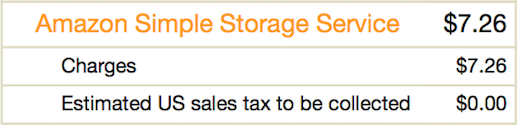

Native S3 For Great Cheap Home Backup

Do you all appreciate how insanely cheap and easy-to-use S3 is? I use it for home backups, and you should too. I have about 72,000 photos and short home movies that are basically priceless to me. All told I need about 400 GB of online storage to back this up. Doing this cost-effectively with established online backup services (Mozy, Carbonite) is expensive, as is buying that much live storage from Google or Dropbox. But using the method here, I only have to pay about $6/month to keep them safe and sound.
S3 is Amazon's Simple Storage Service, part of Amazon Web Services. It's a document store. It is reliable and has basically infinite capacity, enough for your and my needs. The GUI is pretty clunky, but that's fine, because the API is useful (I prefer the Python language binding via Boto) and the command line is decent. Glacier is cold-storage well-integrated into S3. You specify a bucket policy, say move to glacier after 10 days, and it gets archived. Once archived it costs something to get out (at more than some rate). That's OK, this is just for backup. If you ever need to get data out, you'll be happy to do it slowly or pay the premium.
There are good services out there (e.g. Tarsnap) that layer some management tools and encryption on top of S3 (and presumably Glacier). I wouldn't be surprised if they even simplify the management of policy, like Glacier rules or folder exclusions. I'm not using those because there's anything wrong with them, I just find the basic dumb way sufficient for my needs.
OK, with that out of the way, this is how to do set it up yourself:
-
Sign up for AWS. Assuming you have an account with Amazon already, just go here and sign up.
-
Download and install the command line tools for Amazon. These instructions are written to use the s3cmd utility just because that's what I've been using for a while. The nicer Amazon command line tools now support rsync, so that would probably be nicer, so consider that. Both tools have nice support for storing credentials in a dotfile, read the instructions for that.
-
Create a bucket, name it anything. The namespace of buckets is globally shared, so the name "pictures" is certainly already taken, but "jones-picture-vault" is likely fine.
Set up bucket permissions to automatically send data to glacier. I see no reason to have it live in S3 any longer than necessary, so I just send it straight to the freezer. I guess you could have it live in S3 limbo for a week for cheaper testing if you want.
-
Sync you photo library. From a shell:
cd ~ s3cmd -v sync iPhoto\ Library/. s3://my-bucket-name
It's a quirk of my setup that I use s3cmd to do the sync, and not the aws cli that I asked you to install/run above. Basically, I use the aws cli for works stuff, and s3cmd for personal. That means I can store one set of credentials in my ~/.s3cmd file, and another in ~/.boto. They both work fine.
-
It's easy enough to set up as a cron job to run weekly or so. Me, I just run by hand, usually after coming home from a trip with a slew of new photos. Why not run more often? Because the sync seems to touch many (all?) of the files in Glacier, and accesses cost money. I haven't calculated, but maybe it's $1.00 per backup for me -- not too much, but would break the bank if yout did it daily.
There are other articles describing this on sites like LifeHacker and such. My instructions are pretty spare. If you get stuck try looking at those. I would just not bother with the fancy UI's and just do via the command line. But that's just me.